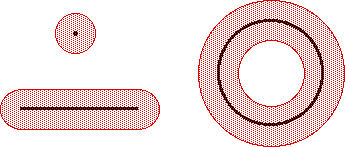

| To measure the distance between compact subsets, we use the idea of ε-thickening of a set A: |
| Aε is the collection of all points within a distance ε of a point of A. |
|  |
| The ε-thickening of a point |
| The ε-thickenings of a line segment and of a circle is shown in the picture. |
Return to Convergence of determinisitc IFS.